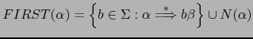

Sig: Recuperación de Errores en Sup: Análisis Sintáctico Ascendente en Ant: Acciones en Medio de Con:
yapp proporciona un token especial,
error, que puede ser utilizado en el programa fuente
para extender el traductor con ``producciones de error''
que lo doten de cierta capacidad para
recuperase de una entrada errónea y poder continuar
analizando el resto de la entrada.
Consideremos lo que ocurre al ejecutar nuestra calculadora
yapp con una entrada errónea. Recordemos
la gramática:
9 %right '='
10 %left '-' '+'
11 %left '*' '/'
12 %left NEG
13 %right '^'
14
15 %%
16 input: # empty
17 | input line { push(@{$_[1]},$_[2]); $_[1] }
18 ;
19
20 line: '\n' { $_[1] }
21 | exp '\n' { print "$_[1]\n" }
22 | error '\n' { $_[0]->YYErrok }
23 ;
La regla line
 error '\n' es una producción de
error. La idea general de uso es que, a traves de la misma, el programador
le indica a yapp que, cuando se produce un error
dentro de una expresión, descarte todos los tokens hasta llegar al
retorno del carro y prosiga con el análisis.
Además, mediante la llamada al método YYErrok el programador
anuncia que, si se alcanza este punto, la recuperación puede considerarse
``completa'' y que yapp puede emitir a partir de ese momento
mensajes de error
con la seguridad de que no son consecuencia de un comportamiento inestable
provocado por el primer error.
El resto de la gramática de la calculadora era como sigue:
24
25 exp: NUM
26 | VAR { $_[0]->YYData->{VARS}{$_[1]} }
27 | VAR '=' exp { $_[0]->YYData->{VARS}{$_[1]}=$_[3] }
28 | exp '+' exp { $_[1] + $_[3] }
29 | exp '-' exp { $_[1] - $_[3] }
30 | exp '*' exp { $_[1] * $_[3] }
31 | exp '/' exp {
32 $_[3]
33 and return($_[1] / $_[3]);
34 $_[0]->YYData->{ERRMSG}
35 = "Illegal division by zero.\n";
36 $_[0]->YYError;
37 undef
38 }
39 | '-' exp %prec NEG { -$_[2] }
40 | exp '^' exp { $_[1] ** $_[3] }
41 | '(' exp ')' { $_[2] }
42 ;
en la ejecución activamos el flag yydebug a 0x10 para
obtener información sobre el tratamiento de errores:
$self->YYParse( yylex => \&_Lexer, yyerror => \&_Error, yydebug => 0x10 );Pasemos a darle una primera entrada errónea:
$ ./usecalc.pl 3-+2 Syntax error. **Entering Error recovery. **Pop state 12. **Pop state 3. **Shift $error token and go to state 9. **Dicard invalid token >+<. **Pop state 9. **Shift $error token and go to state 9. **Dicard invalid token >NUM<. **Pop state 9. **Shift $error token and go to state 9. **End of Error recovery.
El esquema general del algoritmo de recuperación de errores usado
por la versión actual de yapp es el siguiente:
error.
error.
En el ejemplo anterior el analizador estaba en el estado 12 y lo retira
de la pila. Los contenidos del estado 12 son:
exp -> exp '-' . exp (Rule 10)
'(' shift 7 '-' shift 2 NUM shift 6 VAR shift 8
exp go to state 21
Obviamente no esperabamos ver un '+' aqui. El siguiente
estado en la cima de la pila es el 3, el cual tampoco
tiene ninguna transición ante el terminal error:
line -> exp . '\n' (Rule 4) exp -> exp . '+' exp (Rule 9) exp -> exp . '-' exp (Rule 10) exp -> exp . '*' exp (Rule 11) exp -> exp . '/' exp (Rule 12) exp -> exp . '^' exp (Rule 14) '*' shift 17 '+' shift 13 '-' shift 12 '/' shift 15 '\n' shift 14 '^' shift 16El pop sobre el estado 3 deja expuesto en la superficie al estado 1, el cuál ``sabe'' como manejar el error:
$start -> input . $end (Rule 0)
input -> input . line (Rule 2)
$end shift 4 '(' shift 7 '-' shift 2 '\n' shift 5
NUM shift 6 VAR shift 8
error shift 9
exp go to state 3
line go to state 10
error.
En consecuencia, con lo dicho, en el ejemplo se va al estado 9:
line -> error . '\n' (Rule 5) '\n' shift, and go to state 20
**Dicard invalid token >+<. **Pop state 9. **Shift $error token and go to state 9. **Dicard invalid token >NUM<. **Pop state 9. **Shift $error token and go to state 9. **End of Error recovery.
Casiano Rodríguez León